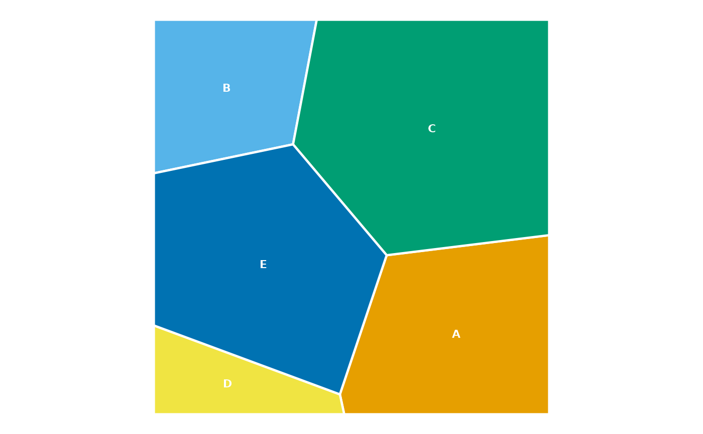
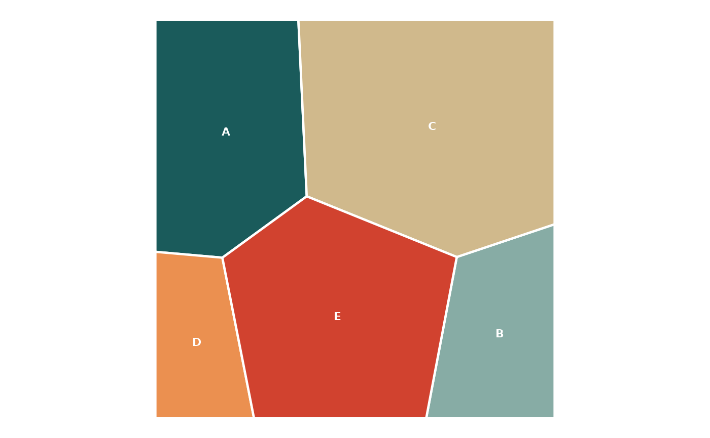

The main plotting function of ggvmap. Produces a ggplot2
visualisation with geom_polygon(); for hierarchical maps the default fill
is the group and heavier borders separate the groups.
Usage
ggvmap(
x,
fill_by = NULL,
border_col = "white",
border_size = 0.8,
group_border_col = "white",
group_border_size = 1.8,
show_labels = TRUE,
label_cells = NULL,
label_col = "white",
label_size = 3,
fontface = "bold",
min_area = 0,
autoscale = FALSE,
family = NULL,
wrap = NULL,
palette = "Okabe-Ito",
legend = FALSE,
interactive = FALSE,
tooltip = NULL,
labels = NULL,
group = NULL,
clip = clip_square(),
convergence_ratio = 0.01,
max_iter = 50,
min_weight_ratio = 0.01,
seed = NULL
)Arguments
- x
A
voronoi_mapobject, or a numeric vector of weights.- fill_by
Cell aesthetic to map fill to: one of
"label","group","data_weight", or"none". Defaults to"group"for hierarchical maps and"label"otherwise.- border_col
Border colour. Default
"white".- border_size
Border line width. Default
0.8.- group_border_col
Colour of the heavier group boundaries drawn for hierarchical maps.
NAdisables them. Default"white". May also be a vector named by group: only the named groups get a border, each in its own colour (e.g.c("LATAM" = "#333333")outlines one region only).- group_border_size
Line width of group boundaries. Default
1.8.- show_labels
Logical; add centroid labels? Default
TRUE.- label_cells
Optional character vector of cell labels to annotate; others get no name label. Default
NULL(all cells).- label_col
Label colour: a single colour (default
"white"), a length-nvector in cell order, or a vector named by cell label (cells not named keep the default) – useful for light text on dark cells.- label_size
Label size: a single value, a length-
nvector in cell order, or a vector named by cell label (unnamed cells keep the default3) – e.g.c(Brazil = 5)to enlarge one label. Default3.- fontface
Font face for the name labels: a single value (e.g.
"bold", the default) applied to all labels, or a vector named by cell label (e.g.c(Brazil = "bold", Russia = "bold.italic")) styling only those cells while the rest stay"plain".- min_area
Cells whose area fraction of the map is below this threshold get no name label. Default
0(label every cell).- autoscale
Logical; shrink label text in small cells? Each cell's text size becomes
label_size * pmin(1, sqrt(cell_area / median_area)), floored at 60% oflabel_size. DefaultFALSE.- family
Font family for the name labels, passed to the text layer.
NULL(default) uses the ggplot2 default.- wrap
Wrap name labels longer than this many characters onto multiple lines (word-aware, via
strwrap()) – e.g.wrap = 10turns "Papua New Guinea" into two lines. DefaultNULL(no wrapping).- palette
Character vector of colours,
"Okabe-Ito"(the default, colourblind-safe; seeokabe_ito()), the name of a built-in palette (all 32 ltc palettes, e.g."alger"or"casa_natal"; list them withvm_palettes()), or a named palette fromgrDevices::hcl.colors().- legend
Logical; show the fill legend? Default
FALSE.- interactive
Logical; make the cells interactive (hover highlight and tooltips) using ggiraph? Render the result with
vm_girafe(). DefaultFALSE.- tooltip
Optional per-cell tooltip text (length-
n, named by label, or length 1) used wheninteractive = TRUE. Defaults to the label and value.- labels, group, clip, convergence_ratio, max_iter, min_weight_ratio, seed
Layout arguments passed to
voronoi_map()whenxis a vector of weights; ignored whenxis already avoronoi_map.
Value
A ggplot object (pass to vm_girafe() to render an interactive
widget when interactive = TRUE). The underlying voronoi_map is
attached as attribute "vm" so annotation helpers can be chained.
Details
x may be an existing voronoi_map() object, or a numeric vector of
weights – in which case the map is computed first (see the layout
arguments below), so ggvmap(weights, labels = ...) computes and plots
in one call.
Examples
# Compute and plot in one call
ggvmap(c(3, 2, 5, 1, 4), labels = c("A", "B", "C", "D", "E"), seed = 42)

# Or plot an existing map
vm <- voronoi_map(c(5, 3, 8, 2, 6), labels = LETTERS[1:5], seed = 1)
ggvmap(vm, palette = "alger")
